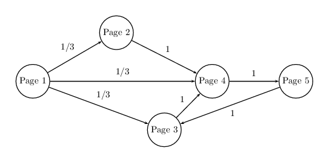
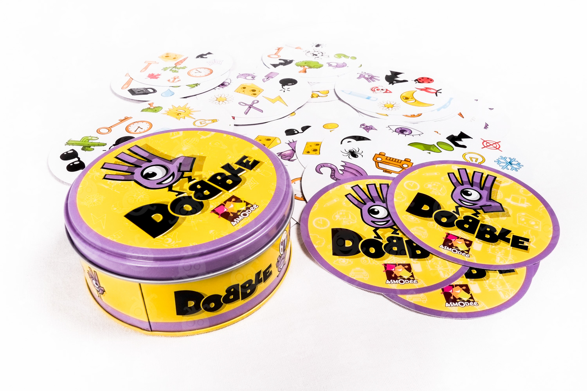

Novembre à Décembre 2022
Projet de Master 2 :
Analyse de données d’un dataset de speed dating
Ce projet est réalisé dans le cadre de l’UE Statistique pour les données de grande dimension suivie à l’École
des Mines de Nancy. Le dataset (provenant de la banque de données OpenML, et disponible
ici)
contient les données relatives à
un évènement expérimental de speed dating.
Nous y trouverons des données recueillies en amont auprès des participants sur leur profil, ainsi que des données
sur leurs impressions après chaque premier rendez-vous.
Le but de ce projet est de construire un modèle de Machine
Learning visant à prédire si une personne voudra revoir son ‘date’ ou non.
Ce projet est proposé par l’entreprise Big Datext et la mairie de Grenoble dans le cadre de l’UE Fouille de Données
et Extraction de Connaissance suivie à Telecom Nancy. Ces deux entités se sont associées pour fournir une base
de données (disponible ici) concernant les arbres de la ville.
L’objectif du projet consiste en deux tâches de prédiction visant :
- D’une part à déterminer, à partir des données disponibles, si l’arbre a ou non un défaut.
- D’autre part, dans l’hypothèse où un arbre peut avoir plusieurs défauts, à déterminer le nombre
de défauts d’un arbre et la localisation de chaque défaut (racine, tronc, collet, houppier).
Dans ce mémoire, on se propose de répondre à la question suivante : "Combien de fois faut-il mélanger
un jeu de cartes pour que l'on puisse considérer que les cartes sont dans un ordre aléatoire ?"
Il sera alors nécessaire de définir rigoureusement la notion d'ordre aléatoire, de préciser la façon
dont on mélangera le paquet, mais aussi le nombre de cartes qui composent le paquet.
Nous modéliserons deux mélanges différents : Le mélange Top-to-Random et le Riffle-Shuffle.
On pourra alors simuler un grand nombre de mélanges consécutifs et utiliser les Chaînes de Markov
pour étudier les phénomènes aléatoires liés aux mélanges.

Dans ce projet, on se propose de découvrir le fonctionnement de l'algorithme Page Rank de Google.
On simulera un réseau de pages Internet reliées entre elles par des hyperliens. On implémentera ensuite l'algorithme de Puissance
itérée, et on testera ses performances (temps de calcul, efficacité).
On effectuera une comparaison de la performance de l'algorithme de puissance itérée avec un algorithme
Page Rank simplifié.

Dans ce mémoire, on se propose de fournir une étude mathématique du Jeu Dobble.
On utilisera pour cela l'Algèbre et les Espaces Projectifs.
Nous expliquerons comment les mathématiques ont permis de concevoir ce jeu.
Pour finir, on se servira des outils mathématiques présentés précédemment pour construire un "Dobble Géant"
composé de 133 cartes.